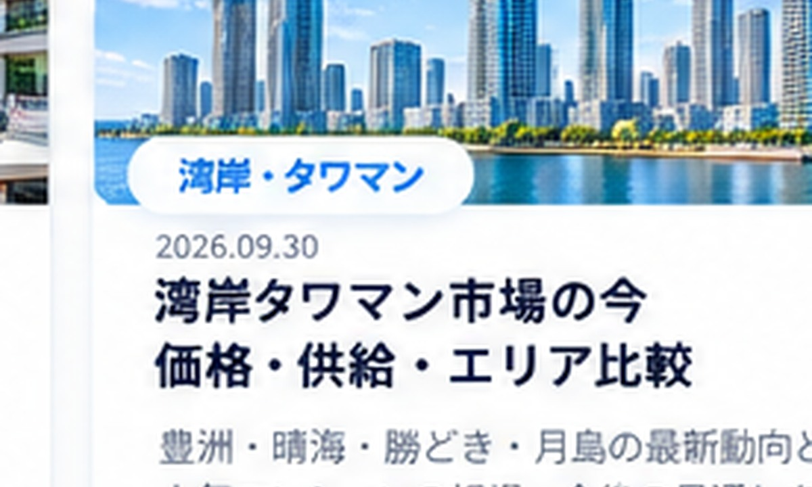

まず読みたい記事
エリア検討の入口になる記事このエリアで確認したいこと
価格妥当性湾岸タワーと都心型マンションを分け、同じ条件の競合と比較。
生活動線駅距離、買い物、保育、BRT・地下鉄など日常の移動を確認。
管理・修繕積立金、長期修繕計画、大規模修繕履歴を確認。
将来売却5〜10年後にどんな買主が検討するかまで考える。
物件名が決まっていれば、個別に比較できます
価格・坪単価・管理・ローン・将来売却までまとめて確認します。
中央区の記事
購入・比較・資産価値・売却まで10本
中央区の中古マンション購入ガイド｜湾岸と都心部を分けて考える勝どき・晴海・月島と築地・日本橋周辺では価格形成が異なります。選び方を整理します。
勝どき vs 月島｜中古マンション購入で見るべき違い駅、街の成熟度、物件タイプ、生活動線、将来売却の観点から比較します。
晴海 vs 勝どき｜湾岸マンションを買うなら何を優先する？駅距離、街区、建物規模、眺望、日常の移動を軸に比較します。
中央区で予算1億円ならどう探す？広さ・築年数・駅距離の考え方1億円前後で中央区を検討するときの条件調整の順番を整理します。
中央区で将来売りやすい中古マンションの見分け方湾岸タワーと都心型マンションに共通する、出口を意識した確認ポイントを整理します。
中央区はタワーマンションと非タワーどちらを選ぶ？勝どき・晴海・月島などで、タワーと非タワーを管理費・駅距離・間取り・売却性から比較します。
中央区の1LDKを単身で買うなら？将来売却まで考えた選び方中央区で単身購入する際の面積・住宅ローン・管理費・駅距離・出口を整理します。
築地再開発を見て中古マンションを買うときの注意点再開発ニュースだけで買わず、工事期間・動線・供給・価格への織り込みまで確認する考え方を整理します。
中央区のタワマンは管理費・修繕積立金をどう見る？月額負担だけでなく、総戸数・共用施設・長期修繕計画・将来負担の見方を整理します。
中央区マンション売却｜湾岸と都心部で売り方はどう違う？中央区でも湾岸タワーと日本橋・築地周辺では競合の見方が異なります。売却時の考え方を整理します。